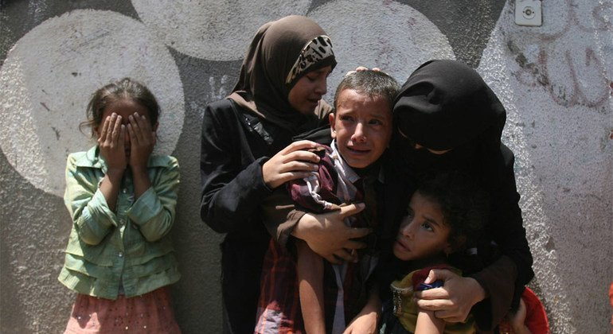
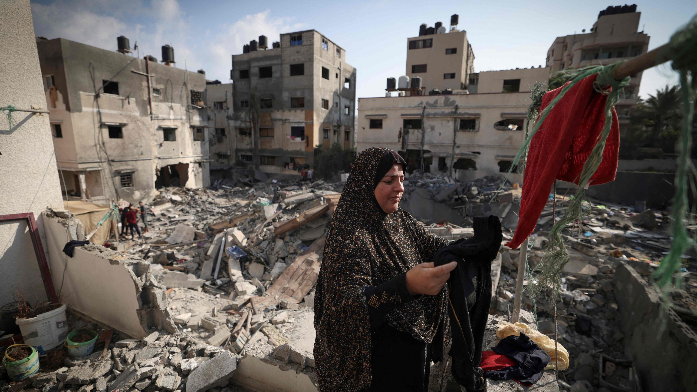

Recently, Gaza was attacked. The death toll from the Israeli assault on Gaza rose to 31 on Sunday, including six children. More than 260 people have been injured.
A senior commander of Islamic Jihad was killed in an Israeli raid on Saturday, the Palestinian armed group confirmed.
Khaled Mansour, its commander in the south of the Gaza Strip, was the second high-ranking member of the armed group to be assassinated as Israeli jets bombed the besieged enclave.
The violence is the worst in Gaza since a war in May 2021 killed more than 260 Palestinians in 11 days, and wounded at least 2,000 others.
The latest attack on Gaza caused devastation on a scale not seen since 2014. 230 people were killed including 63 children, 1,900 people injured, and nearly 60,000 people left homeless. The people of Gaza are having to deal with continuous nights of airstrikes due to ongoing conflict. Now is the time to help Gaza and its people.
After many years of conflict, Palestinians still feel unsafe in their own country. The economy has been damaged by political instability and constant conflict. The blockades in Gaza cause chaos on a daily basis. We’re providing vital health care to help the people of Gaza to rebuild their lives.A third of the people in Palestine live below the poverty line. Thousands of families are struggling with financial hardship.

Tensions are often high between Israel and Palestinians living in East Jerusalem, Gaza and the West Bank.
Gaza is ruled by the Palestinian militant group Hamas, which has fought Israel many times. Israel and Egypt tightly control Gaza's borders to stop weapons getting to Hamas.
Palestinians in Gaza and the West Bank say they are suffering because of Israeli actions and restrictions. Israel says it is only acting to protect itself from Palestinian violence.
The threatened eviction of some Palestinian families in East Jerusalem has also caused rising anger.
In short, the situation isn't going to be sorted out any time soon.
The most recent peace plan, prepared by the United States when Donald Trump was president, was called "the deal of the century" by Israel's then-Prime Minister Benjamin Netanyahu.
But it was been dismissed by the Palestinians as one-sided and never got off the ground.
Any future peace deal will need both sides to agree to resolve complex issues.